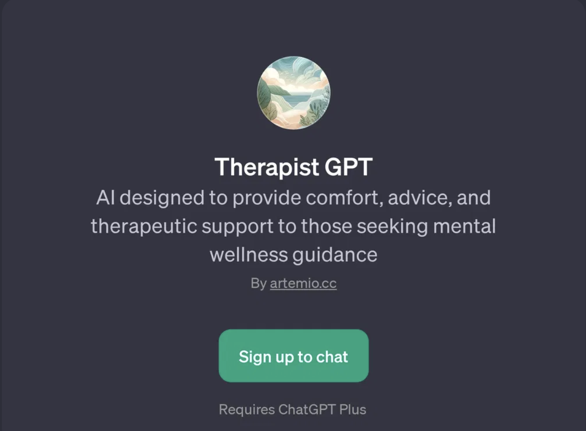

Introduction

Interviews can bring out a lot of emotions—excitement, pressure, and sometimes even anxiety. As I prepared for an upcoming interview, I found myself battling sleepless nights and overthinking everything. I wasn’t just stressed about how I’d perform; the weight of the situation triggered emotional fatigue. Rather than just rehearsing answers, I needed emotional support. That’s when I decided to try TherapistGPT, a version of ChatGPT designed to offer mental wellness guidance.
In this blog, I’ll walk you through my experience using TherapistGPT to work through my interview-related anxiety. It wasn’t just about calming nerves, but about addressing emotional challenges more holistically. From grounding techniques and relaxation exercises to practical advice for tackling interview questions, TherapistGPT became a helpful companion in navigating my stress. It’s a real-time conversation I had with the tool, and I’ll share the full exchange along with insights I gained.
This wasn’t just another chatbot Q&A—it was a transformative experience that gave me the emotional tools to approach my interview with clarity and calm. Read on to see how the conversation unfolded and how I plan to integrate these learnings into my personal well-being.
Conversation Log
You said:
I’m feeling anxious about an upcoming interview, what should I do?
ChatGPT said:
It’s completely natural to feel anxious before an interview—many people experience that. Your anxiety is a sign that you care about the opportunity and want to do well, which is a strength in itself. Here are a few supportive strategies you can try to help manage that anxiety:
- Prepare, But Don’t Overload
- Research the company and role.
- Practice common interview questions out loud.
- Prepare a few questions to ask them—it can help shift your focus from being evaluated to being curious.
- Research the company and role.
- Ground Yourself with Mindfulness
- Try a simple breathing exercise: inhale for 4 seconds, hold for 4, exhale for 6. Repeat a few times to calm your nervous system.
- Do a quick body scan or mindfulness meditation the night before or the day of.
- Try a simple breathing exercise: inhale for 4 seconds, hold for 4, exhale for 6. Repeat a few times to calm your nervous system.
- Visualize Success
- Imagine yourself walking into the interview confidently, answering questions calmly, and connecting well with the interviewer.
- Visualization can help your brain feel more familiar with the situation, reducing fear of the unknown.
- Imagine yourself walking into the interview confidently, answering questions calmly, and connecting well with the interviewer.
- Reframe Your Thoughts
- Instead of thinking, “What if I mess up?”, try shifting to “This is a chance to share who I am and learn about them too.”
- Remind yourself: It’s not just about being perfect—interviews are conversations, not interrogations.
- Instead of thinking, “What if I mess up?”, try shifting to “This is a chance to share who I am and learn about them too.”
- Practice Self-Compassion
- Speak kindly to yourself. Acknowledge your anxiety without judgment: “It’s okay to feel nervous. I’m doing something that matters to me.”
- Treat yourself as you would a friend in the same situation.
- Speak kindly to yourself. Acknowledge your anxiety without judgment: “It’s okay to feel nervous. I’m doing something that matters to me.”
Would you like help practicing specific interview questions or coming up with calming rituals for the day of the interview?
You said:
yes
ChatGPT said:
Great—let’s do both: I’ll give you a calming ritual you can use the day of the interview, and then we can walk through some common interview questions together so you feel more prepared.
üåø Calming Ritual for Interview Day
- Morning Grounding (10 minutes)
- Right after waking up, sit in stillness.
- Do a breathing exercise: Inhale for 4, hold for 4, exhale for 6 (repeat 5–10 times).
- Say an affirmation: “I am prepared, calm, and capable.”
- Right after waking up, sit in stillness.
- Movement (5–15 minutes)
- Gentle stretching, yoga, or a short walk to release nervous energy.
- Movement reduces cortisol and boosts confidence.
- Gentle stretching, yoga, or a short walk to release nervous energy.
- Intentional Prep (20–30 minutes)
- Review your resume and 2–3 key stories that showcase your strengths.
- Remind yourself of your “why”—why you want the job and why you’d be great at it.
- Review your resume and 2–3 key stories that showcase your strengths.
- Pre-Interview Pause (5 minutes before)
- Step away from your notes.
- Breathe deeply. Smile. Sit upright.
- Remind yourself: “This is a conversation. I don’t need to be perfect, just present.”
- Step away from your notes.
üé§ Common Interview Questions Practice
Let’s start with these three: - Tell me about yourself – Focus on your path and what led you here.
- What is your greatest strength? – Choose something real and back it up with an example.
- Tell me about a time you faced a challenge at work – Use the STAR method: Situation, Task, Action, Result.
Would you like to practice one of these now?
You said:
yes
ChatGPT said:
Perfect! Let’s start with “Tell me about yourself.”
Use this simple structure: - Present: What are you doing now? - Past: What experiences brought you here? - Future: Why are you excited about this role?
Example:
“I’m currently working as a customer support specialist, where I’ve been helping users resolve technical issues while improving our support process. Before that, I studied communications and did an internship focused on digital outreach, which got me interested in how businesses build strong customer relationships. Now I’m excited to bring those skills into a role that lets me grow in client-facing responsibilities and contribute to a team that values empathy and innovation.”
Ready to try your version?
You said:
I also can’t sleep because of it. How do I sleep better?
ChatGPT said:
That sounds really hard—when anxiety keeps you up at night, it can become a frustrating cycle. You’re not alone in this. Here are some strategies:
üåô Sleep Tips Before the Interview
- Wind Down (30–60 minutes before bed)
- Avoid bright screens and anything interview-related.
- Try soft music, stretching, or a warm shower.
- Avoid bright screens and anything interview-related.
- Write It Out
- Brain dump your worries in a notebook.
- Or write reminders: “I’ve done my best. It’s okay to rest.”
- Brain dump your worries in a notebook.
- Guided Breathing
- Try the 4-7-8 technique: Inhale for 4, hold for 7, exhale for 8.
- Or use apps like Calm or Insight Timer.
- Try the 4-7-8 technique: Inhale for 4, hold for 7, exhale for 8.
- Progressive Muscle Relaxation
- Slowly tense and release muscles from toes to head.
- Reframe the Pressure
- “One rough night won’t ruin the interview. I’ve prepared.”
Would you like a relaxation script you can use tonight?
You said:
YES
ChatGPT said:
I’m really glad you said yes. Let’s do this together. Find a quiet, comfortable place to sit or lie down.
üåô Bedtime Relaxation Script (5‚Äì7 minutes)
Start with your breath:
Inhale slowly… 1… 2… 3… 4…
Hold…
Exhale… 1… 2… 3… 4… 5… 6…
Repeat gently.
Now your feet…
Tense… hold… release.
Then your calves… thighs… hands… shoulders… jaw.
Let go of the tension with each breath.
Now imagine a wave of warm light starting at your feet…
It moves up your body, soothing every muscle…
Softening your thoughts… calming your heart.
Affirm to yourself:
> “I’ve done enough today. I can rest now. I am safe.”
Feel yourself drift. Sleep is welcome here.
Would you like a shorter version to keep?
You said:
I want to do some counseling. Where is the best in Philly?
ChatGPT said:
That’s a great step. Here are some top-rated places in Philadelphia:
- Walnut Psychotherapy Center
- Trauma-informed, LGBTQ+ affirming care.
- The Center For Growth / Therapy in Philadelphia
- Specializes in therapy for women and anxiety.
- Attune Philadelphia Therapy Group
- Offers relational therapy and free consultations.
- Phl Therapy Collective
- Culturally responsive, sex-positive care for POC and LGBTQ+.
- Mazzoni Center
- Full-service LGBTQ+ wellness, including therapy and groups.
- The Better You Institute
- Individual, couples, family, and child therapy.
You can also search Psychology Today or TherapyDen to find someone based on your insurance and needs.
You said:
Also, I feel tired after sleeping too much. What is that?
ChatGPT said:
It’s more common than you’d think. Here are a few possible reasons:
üå•Ô∏è Why You Might Feel Tired After Sleeping a Lot
Disrupted Circadian Rhythm – Sleeping 10+ hours can throw off your internal body clock.
Poor Sleep Quality – Anxiety or sleep disorders may prevent deep sleep.
Emotional Fatigue – Depression or burnout can cause oversleeping and grogginess.
Sleep Inertia – Waking during deep sleep can leave you feeling foggy.
Lack of Physical Activity – Less movement leads to lower energy and higher fatigue.
üí° What You Can Try
- Set consistent sleep and wake times.
- Get sunlight early in the day.
- Track your sleep patterns.
- Exercise regularly.
- Avoid caffeine or screens before bed.
Would you like help building a gentle daily routine?
Takeaway
Using TherapistGPT during a stressful time was unexpectedly helpful. Initially, I thought I’d just get a few tips to calm my nerves, but what I got was much more meaningful. The conversation felt personal and validating—like talking to a supportive friend who knew exactly what I needed to hear.
What I found most valuable was how the tool addressed my anxiety from multiple angles. It didn’t just offer generic advice like “take a deep breath” but walked me through a calming ritual for the day of my interview. The structure for answering the “Tell me about yourself” question was a game-changer, giving me a clear, confident way to share my story.
The bedtime relaxation script was a standout for me. It not only helped me relax the night of the interview but also showed me how much emotional pressure I was holding onto without realizing it. The experience highlighted how anxiety doesn’t always stem from a lack of preparation but from emotional noise we may not always acknowledge.
What surprised me the most was how non-judgmental and empathetic the interaction felt. Instead of a checklist of tips, I felt truly supported through my anxiety. The compassionate tone made a real difference in how I approached the interview process.
Reflections and Insights
- Anxiety before a high-stakes situation doesn’t mean I’m unprepared; it means I care.
- Reframing my thoughts from “I have to perform” to “I have something to share” can shift my mindset.
- Sleep struggles often aren’t just physical; they can be tied to emotional stress that needs attention.
How I’ll Apply This Going Forward
- I’ll turn to TherapistGPT for emotional regulation during stressful moments—not just before interviews, but before presentations or tough conversations.
- I’ll use the morning ritual and breathing techniques more regularly to manage stress, not just in high-pressure moments but in everyday life.
- I’ll be more proactive in recognizing when I’m emotionally overwhelmed and ask for help, whether from AI or a human.
- I’ll continue exploring therapy options in my city. Emotional wellness isn’t just about coping with breakdowns—it’s about ongoing growth and care.
Ultimately, this experience showed me that TherapistGPT isn’t just a tool for stress management; it’s a way to approach emotional wellness with intention. Technology, when designed thoughtfully, can truly be a part of our personal growth and healing process.